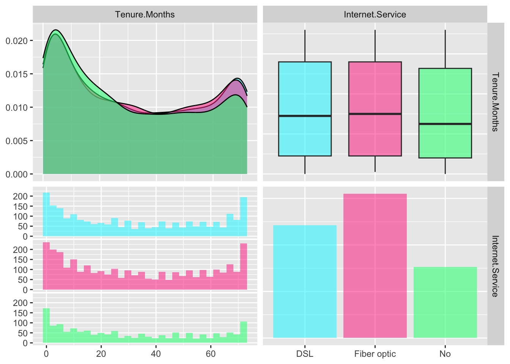
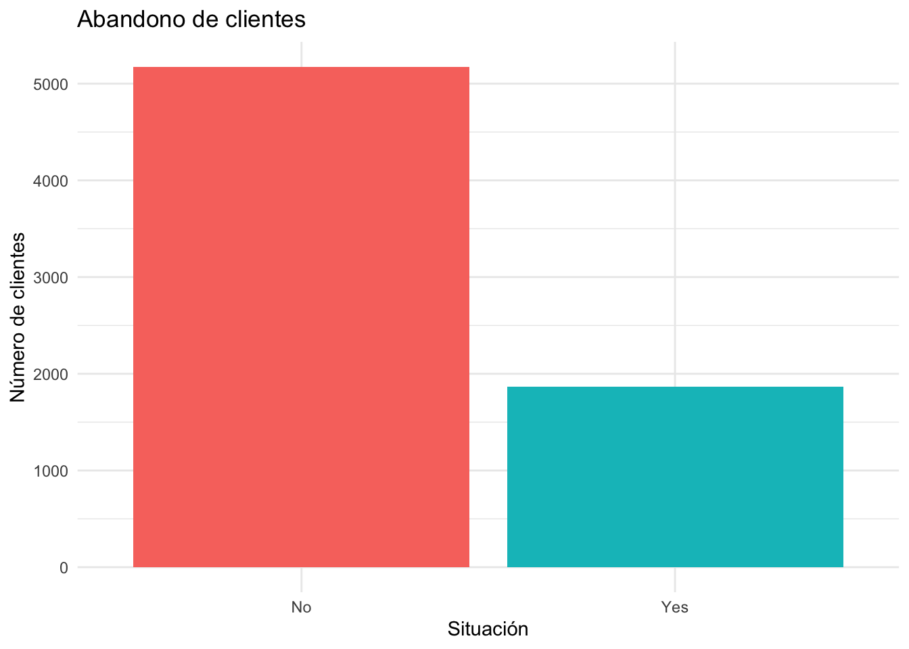
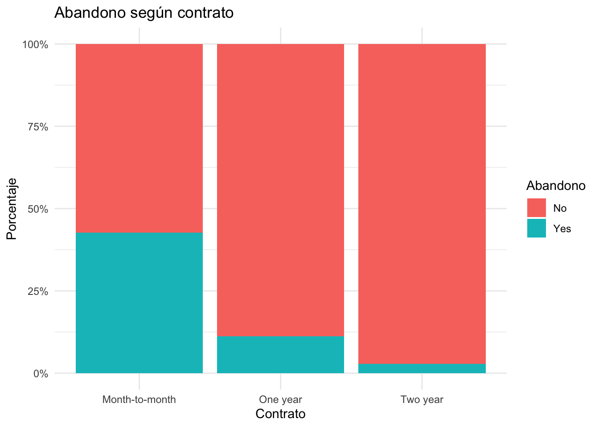
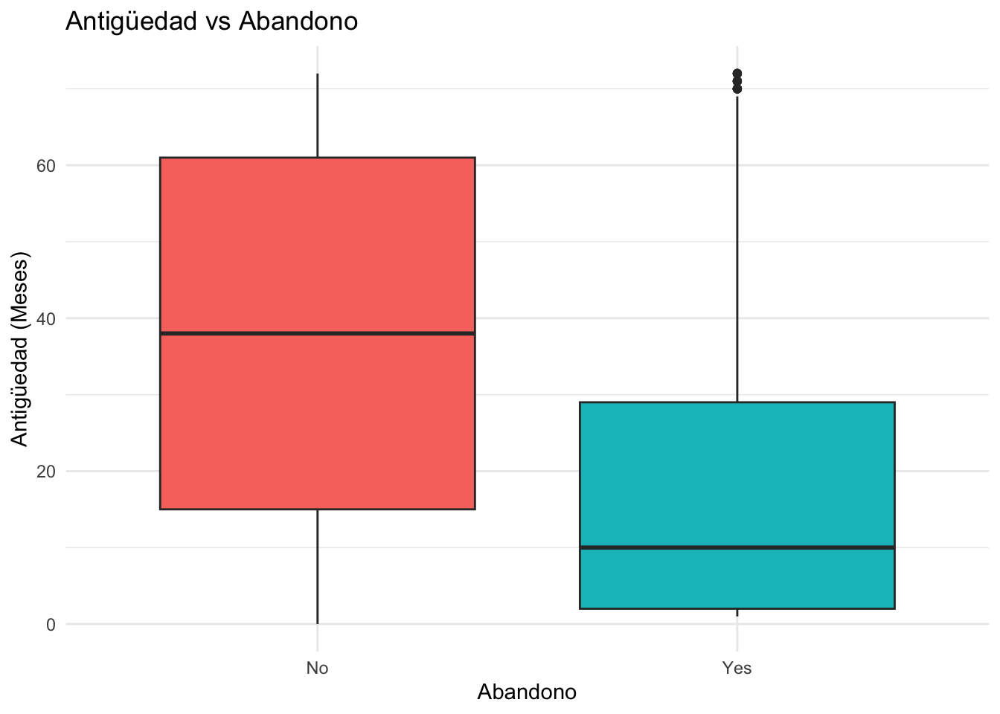
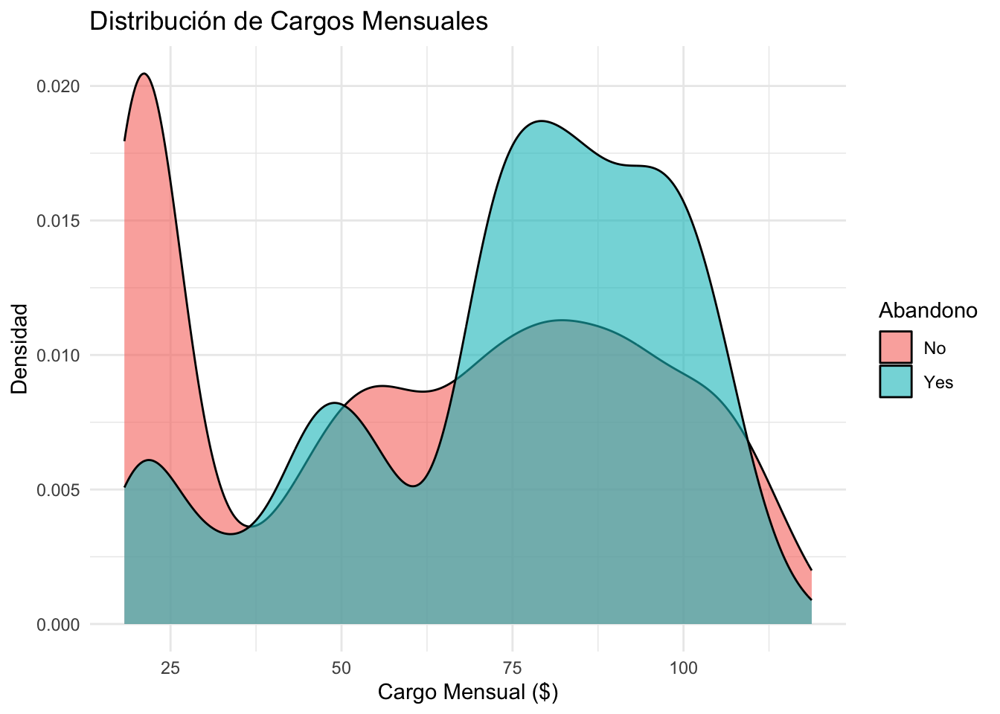
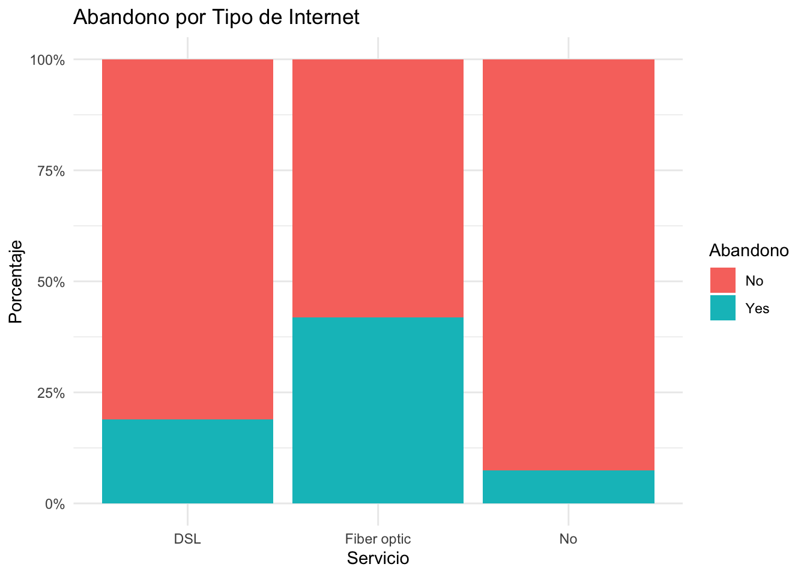
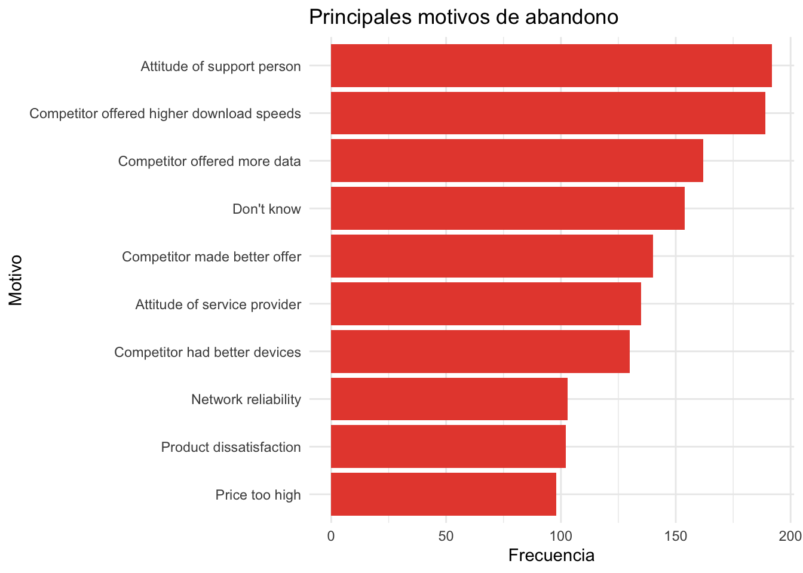

# Cargamos las librerías necesarias
library(ggplot2)
library(GGally)
library(dplyr)
# Cargamos los datos
datos_telco <- read.csv("Telco_customer_churn.csv")Análisis de Abandono de Clientes (Telco Churn)
Introducción
Este informe analiza los datos de abandono (Churn) de los clientes de una compañía de telecomunicaciones. El objetivo es visualizar cuántos clientes se han dado de baja, cómo se distribuyen los cargos mensuales y qué factores contractuales, demográficos o de servicio influyen en la decisión de abandonar la empresa.
Diccionario de Datos
A continuación, se detalla el significado de cada una de las variables incluidas en el conjunto de datos para facilitar su interpretación:
Identificación y Ubicación
CustomerID: Código identificador único de cada cliente.Country,State,City,Zip.Code: País, Estado, Ciudad y Código Postal de residencia.
Perfil Demográfico
Gender: Género del cliente (Hombre / Mujer).Senior.Citizen: Indica si el cliente es mayor de 65 años (Tercera edad).Partner: Indica si el cliente vive con su pareja.Dependents: Indica si el cliente tiene personas a su cargo.
Relación y Servicios Contratados
Tenure.Months: Antigüedad del cliente en meses.Phone.Service: Indica si tiene contratado servicio telefónico básico.Internet.Service: Tipo de conexión a internet (DSL, Fibra óptica, o ninguna).Online.Security,Online.Backup,Device.Protection,Tech.Support: Servicios adicionales.Streaming.TV,Streaming.Movies: Consumo de plataformas de streaming.
Facturación y Pagos
Contract: Tipo de contrato o permanencia (Mes a mes, un año, o dos años).Monthly.Charges: Importe mensual que paga el cliente.Total.Charges: Importe total acumulado pagado por el cliente históricamente.
Análisis de Abandono (Churn)
Churn.Label: Indica en texto si el cliente se ha dado de baja (“Yes”) o sigue activo (“No”).Churn.Reason: Motivo específico al darse de baja.
Planteamiento inicial del EDA
El objetivo de este análisis exploratorio de datos (EDA) es estudiar el comportamiento de baja de los clientes de la compañía e identificar qué perfiles y características están más asociados con dicho abandono, permitiendo así fundamentar estrategias de retención.
Preguntas de partida
- ¿Qué proporción de clientes ha abandonado la compañía?
- ¿Cómo varía el abandono según el tipo de contrato?
- ¿Existen diferencias en la antigüedad entre los clientes que abandonan y los que permanecen?
- ¿Se observan diferencias en los cargos mensuales según el abandono?
- ¿Varía la proporción de abandono según el servicio de Internet contratado?
- ¿Cuáles son los motivos de abandono más frecuentes?
- Exploración extra: Relación entre la Antigüedad y el Servicio de Internet.
0. Carga de librerías y datos
¿Por qué realizamos este apartado?
Antes de comenzar cualquier análisis en R, necesitamos cargar los paquetes que contienen las funciones de manipulación de datos (dplyr), creación de gráficos avanzados (ggplot2) y matrices de correlación visual (GGally). Asimismo, importamos el archivo CSV original para almacenarlo en un objeto (datos_telco) sobre el cual ejecutaremos todas las consultas.
Exploración inicial
¿Por qué realizamos este apartado?
Es fundamental hacer una primera inspección de la tabla para comprobar que los datos se han leído correctamente, conocer los nombres exactos de las columnas y extraer algunas métricas descriptivas rápidas sobre la composición de nuestra cartera de clientes (presencia de fibra óptica, límite de antigüedad registrada y distribución de personas mayores).
head(datos_telco) CustomerID Count Country State City Zip.Code
1 3668-QPYBK 1 United States California Los Angeles 90003
2 9237-HQITU 1 United States California Los Angeles 90005
3 9305-CDSKC 1 United States California Los Angeles 90006
4 7892-POOKP 1 United States California Los Angeles 90010
5 0280-XJGEX 1 United States California Los Angeles 90015
6 4190-MFLUW 1 United States California Los Angeles 90020
Lat.Long Latitude Longitude Gender Senior.Citizen Partner
1 33.964131, -118.272783 33.96413 -118.2728 Male No No
2 34.059281, -118.30742 34.05928 -118.3074 Female No No
3 34.048013, -118.293953 34.04801 -118.2940 Female No No
4 34.062125, -118.315709 34.06213 -118.3157 Female No Yes
5 34.039224, -118.266293 34.03922 -118.2663 Male No No
6 34.066367, -118.309868 34.06637 -118.3099 Female No Yes
Dependents Tenure.Months Phone.Service Multiple.Lines Internet.Service
1 No 2 Yes No DSL
2 Yes 2 Yes No Fiber optic
3 Yes 8 Yes Yes Fiber optic
4 Yes 28 Yes Yes Fiber optic
5 Yes 49 Yes Yes Fiber optic
6 No 10 Yes No DSL
Online.Security Online.Backup Device.Protection Tech.Support Streaming.TV
1 Yes Yes No No No
2 No No No No No
3 No No Yes No Yes
4 No No Yes Yes Yes
5 No Yes Yes No Yes
6 No No Yes Yes No
Streaming.Movies Contract Paperless.Billing Payment.Method
1 No Month-to-month Yes Mailed check
2 No Month-to-month Yes Electronic check
3 Yes Month-to-month Yes Electronic check
4 Yes Month-to-month Yes Electronic check
5 Yes Month-to-month Yes Bank transfer (automatic)
6 No Month-to-month No Credit card (automatic)
Monthly.Charges Total.Charges Churn.Label Churn.Value Churn.Score CLTV
1 53.85 108.15 Yes 1 86 3239
2 70.70 151.65 Yes 1 67 2701
3 99.65 820.50 Yes 1 86 5372
4 104.80 3046.05 Yes 1 84 5003
5 103.70 5036.30 Yes 1 89 5340
6 55.20 528.35 Yes 1 78 5925
Churn.Reason
1 Competitor made better offer
2 Moved
3 Moved
4 Moved
5 Competitor had better devices
6 Competitor offered higher download speedscolnames(datos_telco) [1] "CustomerID" "Count" "Country"
[4] "State" "City" "Zip.Code"
[7] "Lat.Long" "Latitude" "Longitude"
[10] "Gender" "Senior.Citizen" "Partner"
[13] "Dependents" "Tenure.Months" "Phone.Service"
[16] "Multiple.Lines" "Internet.Service" "Online.Security"
[19] "Online.Backup" "Device.Protection" "Tech.Support"
[22] "Streaming.TV" "Streaming.Movies" "Contract"
[25] "Paperless.Billing" "Payment.Method" "Monthly.Charges"
[28] "Total.Charges" "Churn.Label" "Churn.Value"
[31] "Churn.Score" "CLTV" "Churn.Reason" # Clientes con Fibra Óptica
table(datos_telco$Internet.Service == "Fiber optic")
FALSE TRUE
3947 3096 mean(datos_telco$Internet.Service == "Fiber optic")[1] 0.4395854# Antigüedad máxima
max(datos_telco$Tenure.Months, na.rm = TRUE)[1] 72# Proporción de Tercera Edad en Los Angeles y general
mean(datos_telco$City[datos_telco$Senior.Citizen == "Yes"] == "Los Angeles", na.rm = TRUE)[1] 0.04553415mean(datos_telco$Senior.Citizen == "No", na.rm = TRUE)[1] 0.8378532¿Qué información nos proporciona?
- head() y colnames(): Nos muestran las primeras 6 filas de la base de datos y los nombres de las variables disponibles, verificando que los tipos de datos (texto, numéricos) son coherentes. - Clientes con Fibra Óptica: Nos indica que 3.096 clientes tienen contratada fibra óptica, lo que representa aproximadamente el 43,96% del total de la cartera. - Antigüedad máxima: El cliente más fiel lleva 72 meses (6 años completos) en la compañía. - Proporción de Tercera Edad: Observamos que alrededor del 4,55% de los clientes mayores de 65 años residen en la ciudad de Los Ángeles, mientras que el 83,79% del total de clientes de la empresa no pertenecen a la tercera edad (Senior.Citizen == "No").
Relación entre Antigüedad y Servicio de Internet
¿Por qué realizamos este apartado?
Utilizamos la función ggpairs para cruzar simultáneamente una variable numérica (Tenure.Months) y una categórica (Internet.Service), diferenciando por colores cada modalidad de conexión. Esto nos permite observar de un vistazo si la antigüedad de los clientes varía según el tipo de tecnología contratada.
# Gráfico de relaciones (Antigüedad vs Servicio de Internet)
ggpairs(datos_telco[, c("Tenure.Months", "Internet.Service")],
aes(color = Internet.Service, alpha = 0.5)) +
scale_color_manual(values = c("DSL" = "#00F5FF", "Fiber optic" = "#FF3E96", "No" = "#00FF7F")) +
scale_fill_manual(values = c("DSL" = "#00F5FF", "Fiber optic" = "#FF3E96", "No" = "#00FF7F"))
¿Qué información nos proporciona?
El panel combinado muestra tanto el volumen de clientes en cada tecnología como los diagramas de caja y curvas de densidad de su antigüedad. Permite apreciar cómo se reparte el tiempo de permanencia en cada grupo y detectar si existen diferencias de retención entre usuarios de DSL, Fibra óptica y aquellos sin servicio de internet.
1. Proporción de clientes que han abandonado la compañía
¿Por qué realizamos este apartado?
El primer paso clave del estudio de Churn es cuantificar la magnitud del problema: saber exactamente cuántos clientes se han ido frente a cuántos permanecen activos, tanto en términos absolutos como porcentuales.
table(datos_telco$Churn.Label)
No Yes
5174 1869 round(prop.table(table(datos_telco$Churn.Label)) * 100, 2)
No Yes
73.46 26.54 ggplot(datos_telco, aes(x = Churn.Label, fill = Churn.Label)) +
geom_bar() +
labs(title = "Abandono de clientes", x = "Situación", y = "Número de clientes") +
theme_minimal() +
theme(legend.position = "none")
¿Qué información nos proporciona?
- La tabla y el gráfico de barras revelan que 5.174 clientes (73,46%) continúan en la empresa (No), mientras que 1.869 clientes (26,54%) se han dado de baja (Yes). - Perder a más de una cuarta parte de la cartera es una cifra considerable en el sector de las telecomunicaciones, lo que justifica profundizar en las variables siguientes para descubrir las causas.
2. Abandono según el tipo de contrato
¿Por qué realizamos este apartado?
El tipo de compromiso contractual suele ser uno de los mayores predictores de baja. Cruzamos la variable Contract con Churn.Label calculando porcentajes por fila (margin = 1) y generando un gráfico de barras apiladas al 100% (position = "fill") para comparar justamente el riesgo de fuga en cada modalidad.
table(datos_telco$Contract, datos_telco$Churn.Label)
No Yes
Month-to-month 2220 1655
One year 1307 166
Two year 1647 48round(prop.table(table(datos_telco$Contract, datos_telco$Churn.Label), margin = 1) * 100, 2)
No Yes
Month-to-month 57.29 42.71
One year 88.73 11.27
Two year 97.17 2.83ggplot(datos_telco, aes(x = Contract, fill = Churn.Label)) +
geom_bar(position = "fill") +
scale_y_continuous(labels = scales::percent) +
labs(title = "Abandono según contrato", x = "Contrato", y = "Porcentaje", fill = "Abandono") +
theme_minimal()
¿Qué información nos proporciona?
- Existe una relación directa y muy marcada entre la duración del contrato y el abandono: - En los contratos mes a mes (Month-to-month), la tasa de abandono se dispara hasta el 42,71% (1.655 bajas). - En los contratos de un año (One year), el abandono cae drásticamente al 11,27%. - En los contratos de dos años (Two year), la fuga es mínima, situándose en apenas un 2,83%. - Esto demuestra que los clientes sin permanencia tienen una barrera de salida muy baja, siendo el grupo prioritario para campañas de fidelización (por ejemplo, incentivar su paso a contratos anuales).
3. Diferencias en la antigüedad (Tenure)
¿Por qué realizamos este apartado?
Queremos comprobar si el abandono ocurre principalmente en clientes recién llegados o en clientes veteranos. Para ello, calculamos la media y la mediana de los meses de antigüedad (Tenure.Months) agrupando por situación de abandono y representamos su distribución mediante un diagrama de caja (boxplot).
datos_telco %>%
group_by(Churn.Label) %>%
summarise(
Media_Antiguedad = mean(Tenure.Months, na.rm = TRUE),
Mediana_Antiguedad = median(Tenure.Months, na.rm = TRUE)
)# A tibble: 2 × 3
Churn.Label Media_Antiguedad Mediana_Antiguedad
<chr> <dbl> <dbl>
1 No 37.6 38
2 Yes 18.0 10ggplot(datos_telco, aes(x = Churn.Label, y = Tenure.Months, fill = Churn.Label)) +
geom_boxplot() +
labs(title = "Antigüedad vs Abandono", x = "Abandono", y = "Antigüedad (Meses)") +
theme_minimal() +
theme(legend.position = "none")
¿Qué información nos proporciona?
- Los clientes que permanecen (No) tienen una antigüedad media de 37,57 meses y una mediana de 38 meses. - Por el contrario, los clientes que abandonan (Yes) tienen una antigüedad media mucho menor, de 17,98 meses, y una mediana de tan solo 10 meses. - El boxplot confirma visualmente que la mitad de las bajas se producen antes de cumplir el primer año (10 meses). Es decir, el riesgo de fuga es crítico durante los primeros meses de vida del cliente; una vez superada esa barrera inicial, la fidelidad aumenta notablemente.
4. Diferencias en los cargos mensuales
¿Por qué realizamos este apartado?
El factor económico es determinante en la satisfacción del consumidor. Analizamos la media y mediana de la factura mensual (Monthly.Charges) según el estado de baja y trazamos un gráfico de densidad superpuesto para observar en qué tramos de precio se concentran las fugas.
datos_telco %>%
group_by(Churn.Label) %>%
summarise(
Media_Cargos = mean(Monthly.Charges, na.rm = TRUE),
Mediana_Cargos = median(Monthly.Charges, na.rm = TRUE)
)# A tibble: 2 × 3
Churn.Label Media_Cargos Mediana_Cargos
<chr> <dbl> <dbl>
1 No 61.3 64.4
2 Yes 74.4 79.6ggplot(datos_telco, aes(x = Monthly.Charges, fill = Churn.Label)) +
geom_density(alpha = 0.6) +
labs(title = "Distribución de Cargos Mensuales", x = "Cargo Mensual ($)", y = "Densidad", fill = "Abandono") +
theme_minimal()
¿Qué información nos proporciona?
- Los clientes que se quedan (No) pagan de media 61,27 $ al mes (mediana de 64,43 $), y en el gráfico de densidad se observa un gran pico de clientes fieles que pagan tarifas básicas alrededor de los 20 $. - En cambio, los clientes que se dan de baja (Yes) asumen facturas notablemente más altas: una media de 74,44 $ y una mediana de 79,65 $. - La curva de densidad de abandono muestra una fuerte concentración entre los 70 $ y los 105 $ mensuales, lo que indica que las tarifas elevadas incrementan la sensibilidad al precio y empujan al cliente a buscar ofertas en la competencia.
5. Abandono según el servicio de Internet
¿Por qué realizamos este apartado?
Evaluamos si el tipo de tecnología de conexión a Internet contratada (DSL, Fiber optic o sin internet No) influye en la tasa de cancelación, lo cual puede alertarnos sobre problemas técnicos, de calidad o de sobreprecio en un producto concreto.
table(datos_telco$Internet.Service, datos_telco$Churn.Label)
No Yes
DSL 1962 459
Fiber optic 1799 1297
No 1413 113round(prop.table(table(datos_telco$Internet.Service, datos_telco$Churn.Label), margin = 1) * 100, 2)
No Yes
DSL 81.04 18.96
Fiber optic 58.11 41.89
No 92.60 7.40ggplot(datos_telco, aes(x = Internet.Service, fill = Churn.Label)) +
geom_bar(position = "fill") +
scale_y_continuous(labels = scales::percent) +
labs(title = "Abandono por Tipo de Internet", x = "Servicio", y = "Porcentaje", fill = "Abandono") +
theme_minimal()
¿Qué información nos proporciona?
- Los resultados muestran una diferencia muy llamativa según el servicio contratado: - Los clientes con Fibra óptica (Fiber optic) presentan una tasa de abandono altísima del 41,89% (1.297 bajas). - En los usuarios de DSL, el abandono se reduce a menos de la mitad (18,96%). - Quienes no tienen internet contratado (No) (solo usan telefonía) apenas se dan de baja (7,40%). - Esto conecta directamente con el punto anterior: la fibra óptica es un servicio más caro (lo que eleva los cargos mensuales) y, además, es el segmento donde más agresivamente compiten otras operadoras o donde los usuarios son más exigentes con la velocidad y estabilidad.
6. Motivos de abandono más frecuentes
¿Por qué realizamos este apartado?
Por último, filtramos exclusivamente a los clientes que han abandonado la empresa (Churn.Label == "Yes") y contabilizamos las razones registradas en la variable Churn.Reason. Seleccionamos el Top 10 de motivos más repetidos y los ordenamos en un gráfico de barras horizontales para identificar las causas raíz declaradas por los propios usuarios.
motivos <- datos_telco %>%
filter(Churn.Label == "Yes" & Churn.Reason != "") %>%
count(Churn.Reason) %>%
arrange(desc(n)) %>%
top_n(10, n)
ggplot(motivos, aes(x = reorder(Churn.Reason, n), y = n)) +
geom_col(fill = "#e74c3c") +
coord_flip() +
labs(title = "Principales motivos de abandono", x = "Motivo", y = "Frecuencia") +
theme_minimal()
¿Qué información nos proporciona?
- El gráfico pone de manifiesto que los motivos principales se agrupan en dos grandes bloques: la competencia y la atención al cliente: 1. Actitud del personal de soporte (Attitude of support person): Es el motivo número uno de baja (192 clientes), a lo que se suma en sexto lugar la actitud del proveedor de servicios (135 clientes). Mejorar el trato al cliente es urgente. 2. Ofertas superiores de la competencia: Le siguen muy de cerca que el competidor ofrecía mayores velocidades de descarga (189), más datos (162), mejores ofertas en general (140) y mejores dispositivos (130). 3. Factores técnicos y de precio: También destacan la fiabilidad de la red (103), la insatisfacción con el producto (102) y el precio demasiado alto (98). - En conclusión, para reducir el Churn, la compañía debe actuar en dos frentes: mejorar la formación y empatía de su servicio de atención al cliente, y revisar las prestaciones y precios de sus tarifas de Fibra Óptica con contrato mensual para igualar el atractivo de los competidores.